Création de collection
Lors de mon stage, j’ai eu l’opportunité de participer à la conception d’une collection complète, en étroite collaboration avec ma responsable de stage et une élève de CAP bijouterie.
J’ai pu prendre part à chaque étape du processus créatif : de la réflexion autour du concept et de l’univers de la collection au choix des formes, des matières et des finitions. Cette expérience m’a également permis de réaliser moi-même certaines pièces, en mettant en pratique mes idées et en expérimentant différentes techniques de bijouterie, tout en découvrant l’organisation et le travail en équipe autour d’un projet professionnel.

Bijoux de scène de la chanteuse Yael Naim
Cette collection est composée de nombreuses pièces variées, mais les bijoux que j’ai réalisés moi-même sont la boucle d’oreille et le collier assorti présentés ci-dessous. Ils ont été sculptés dans de la cire de bijoutier à l’aide de nombreux outils, puis envoyés chez le fondeur pour être coulés en laiton. Après polissage, ils ont été confiés au doreur pour recevoir une finition plaquée or.
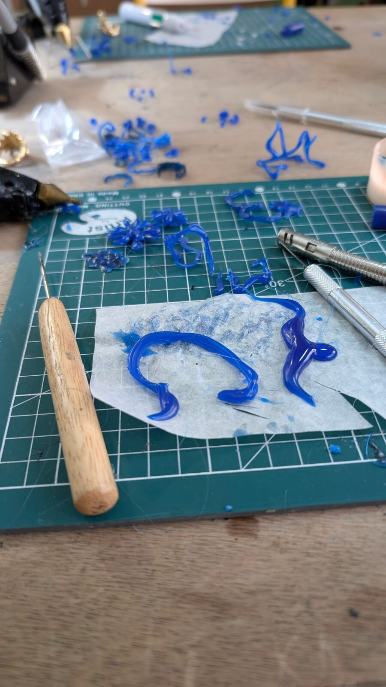
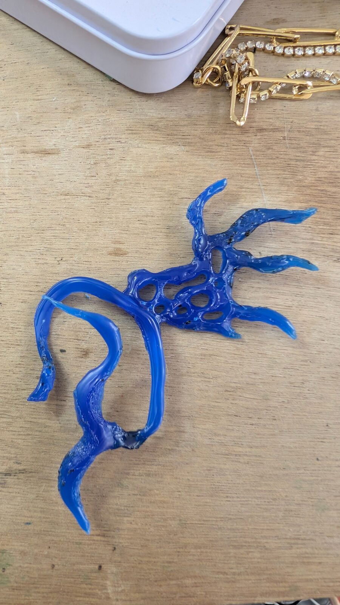
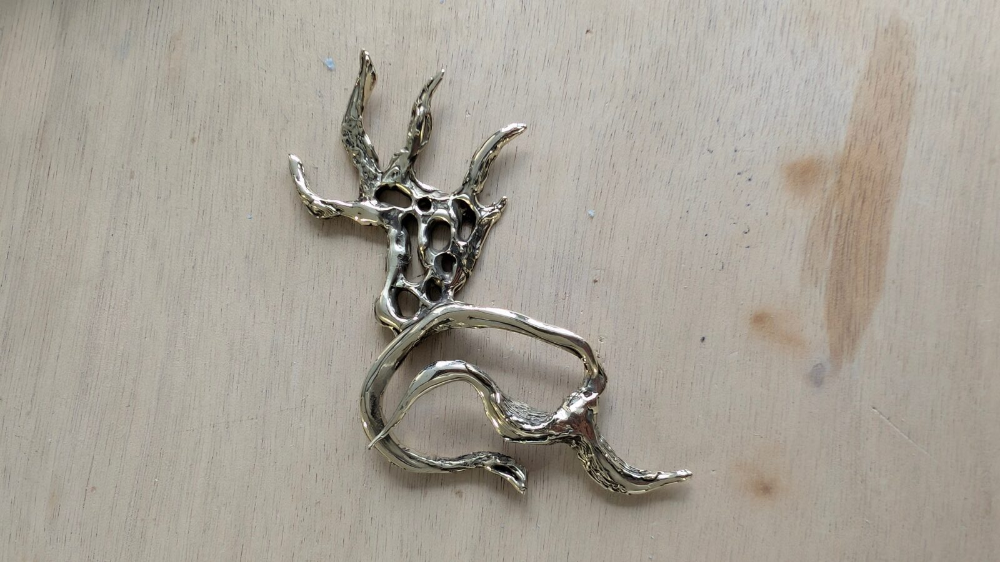
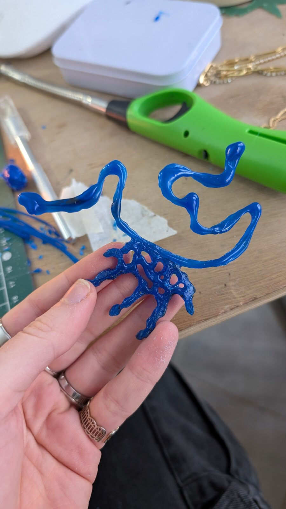
-
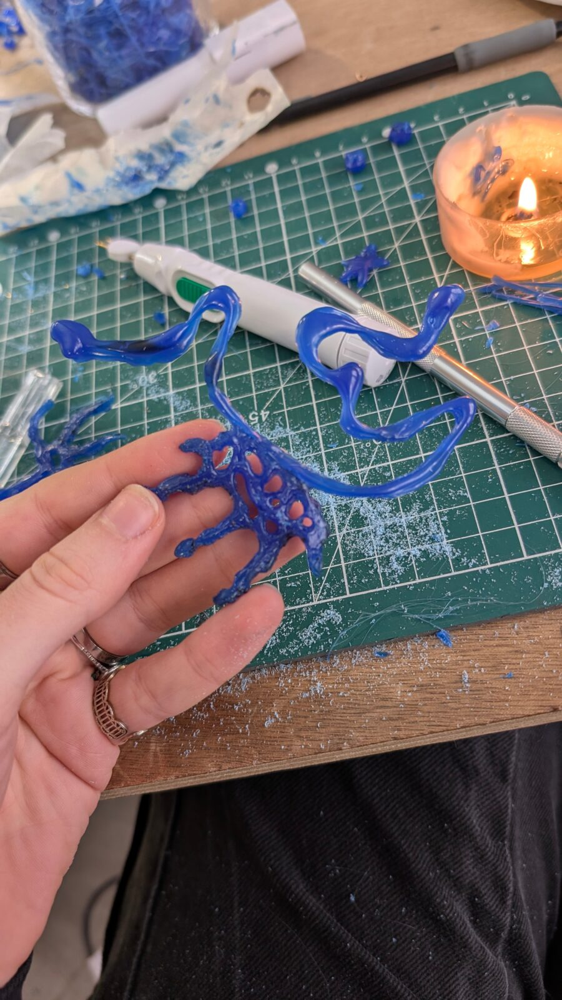
Création en cire
Pour accompagner la boucle d’oreille ci-dessus, j’ai pu créer le collier assorti afin de réaliser une parure.
-
Reprise de fonte et polissage
Je n’ai pas de vidéo du collier durant cette étape, mais le processus est exactement le même que pour la boucle d’oreille.
-
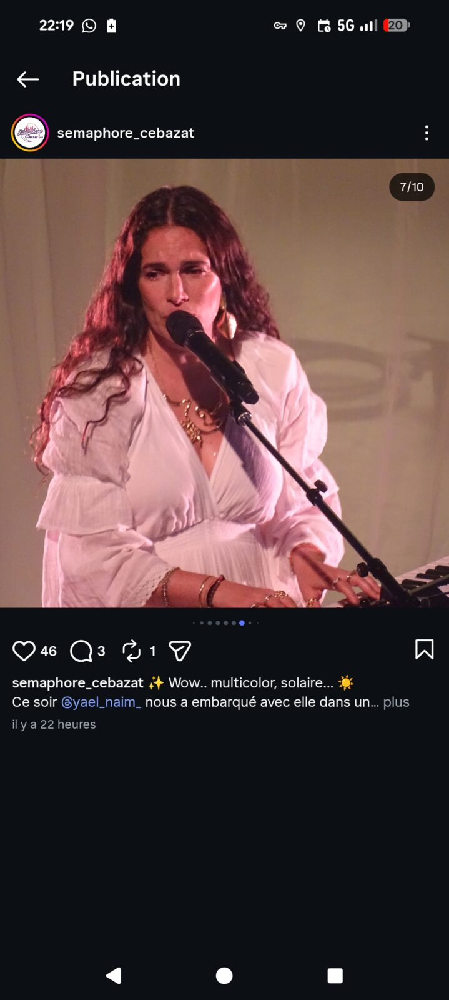
Produit fini
Vous pouvez voir le collier porté par la chanteuse Yael Naim.
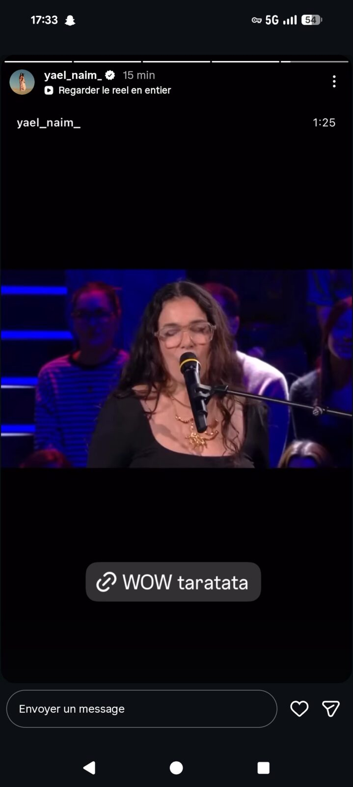
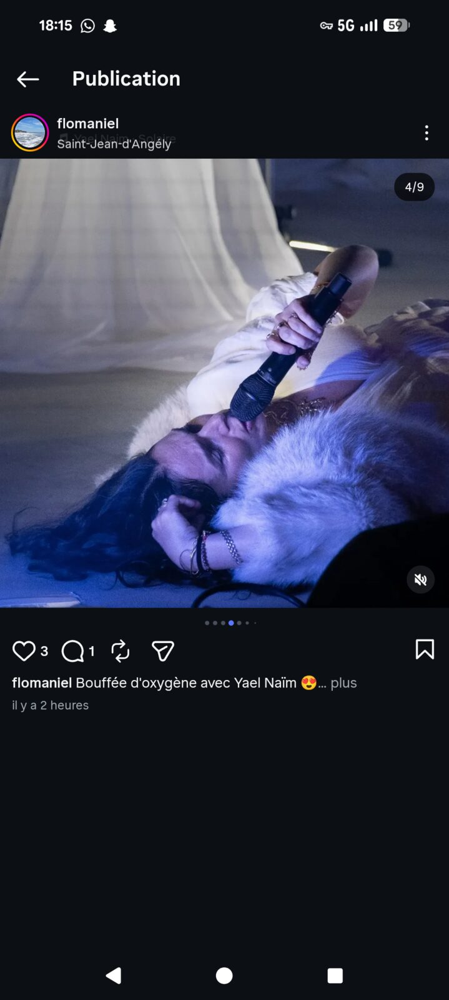
Bijoux de merchandising
Dans la collection de bijoux destinés au merch, j’ai réalisé le grand pendentif « La Fille Pas Cool », inspiré d’une chanson du nouvel album de la chanteuse, ainsi qu’une bague. Ces pièces seront disponibles exclusivement sur le site officiel et en vente à la fin de chaque concert de sa tournée.
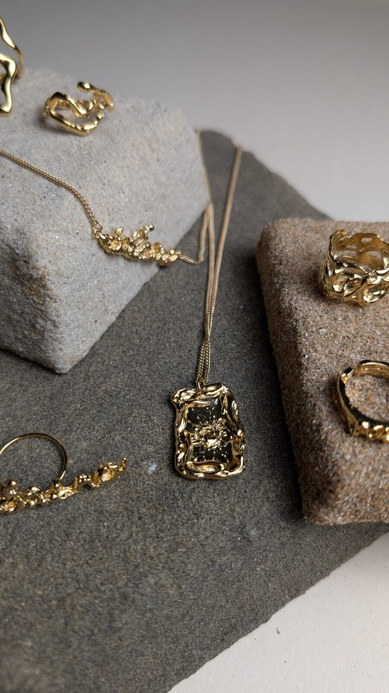
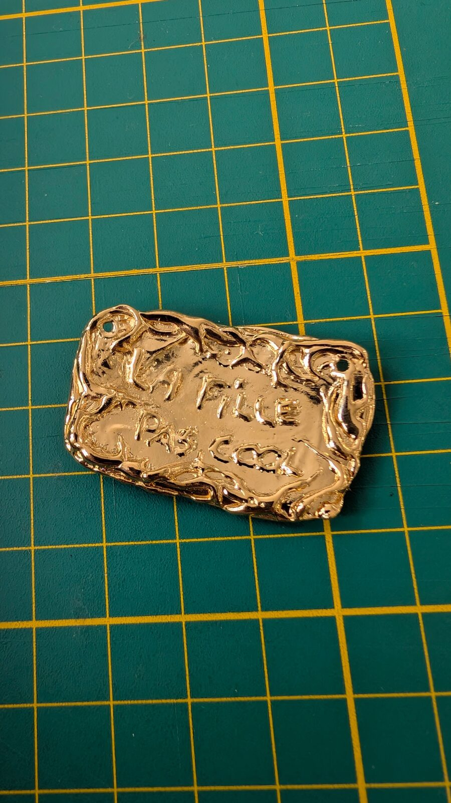
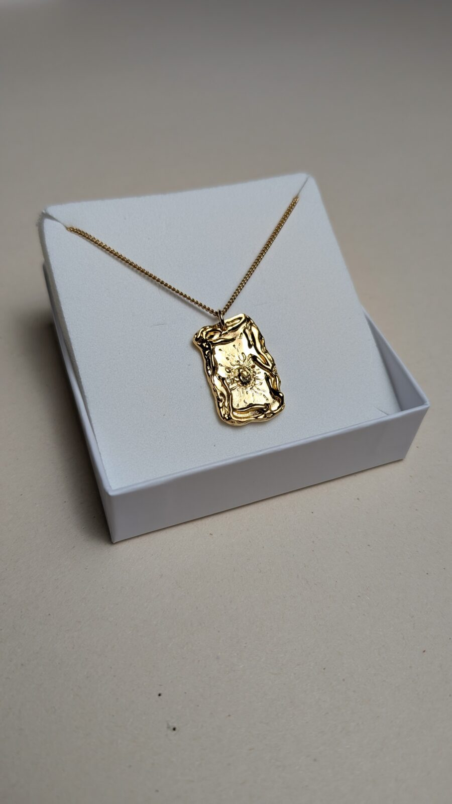
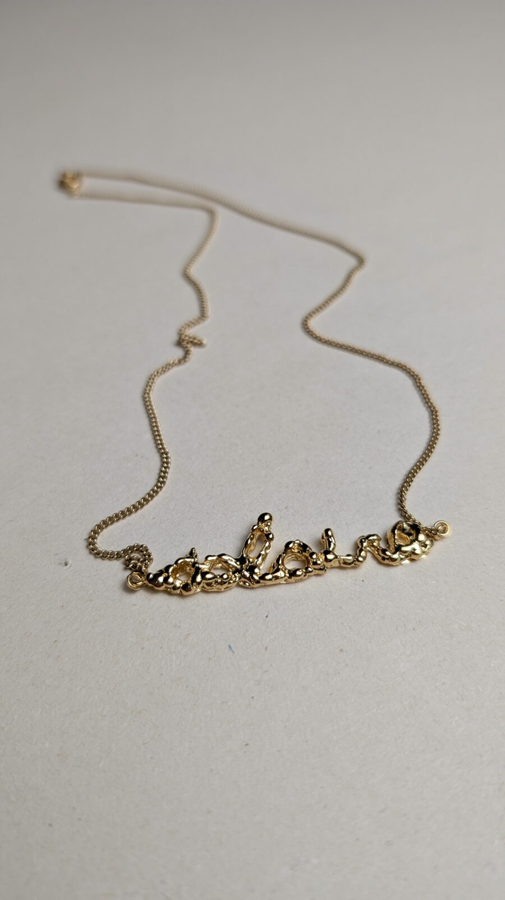
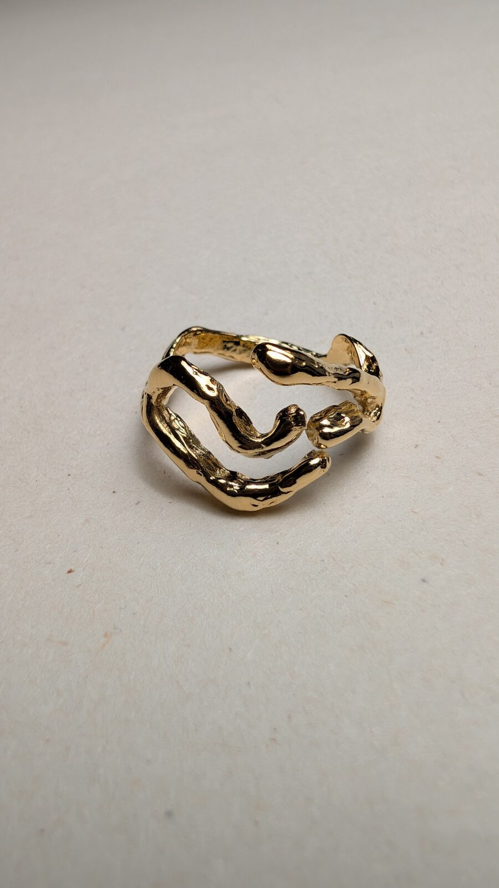
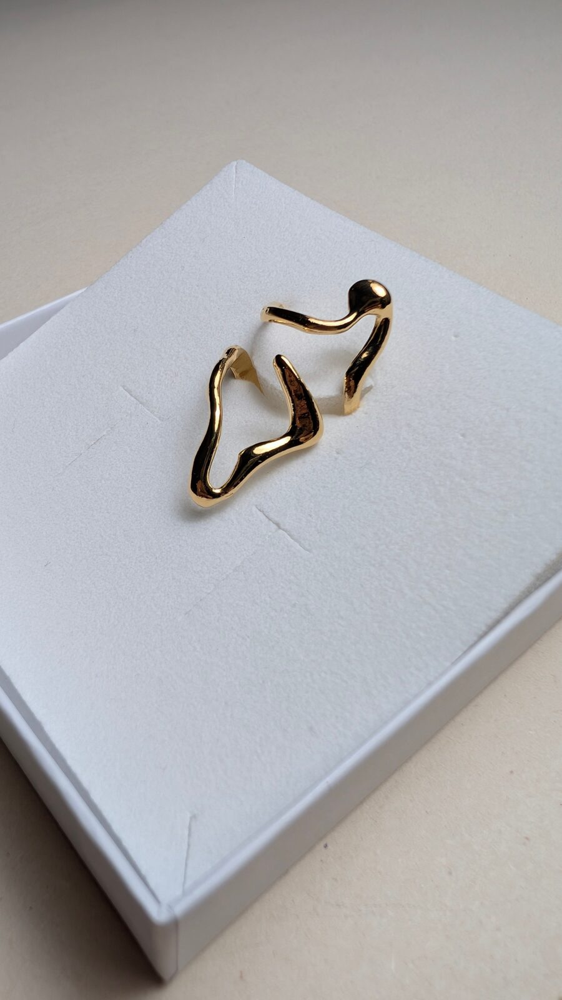
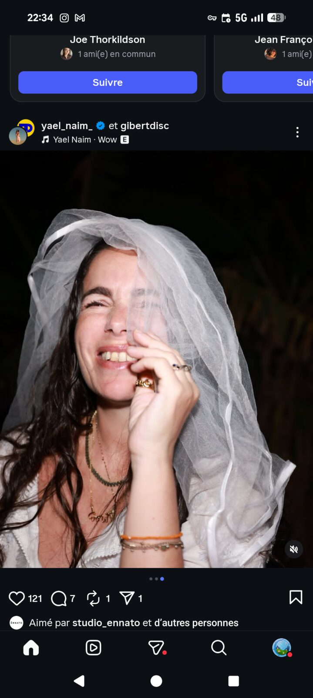
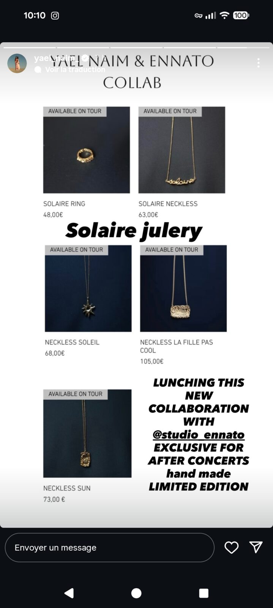